Shaluli Shan fieldwork 2009
Haizi Shan fieldwork 2008
Bayan Har fieldwork 2007 --- MMS photos from the 2007 fieldwork
Bayan Har fieldwork 2006
Photos from the Shaluli Shan fieldwork September-November 2009
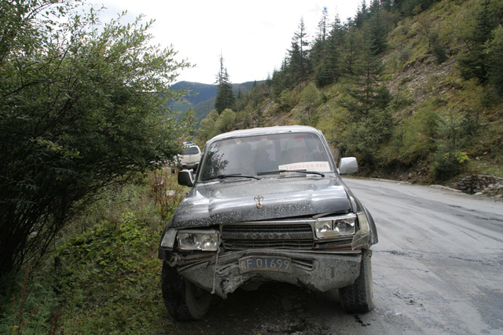
On the third fieldwork day we crashed with another car in a sharp turn outside Yajiang
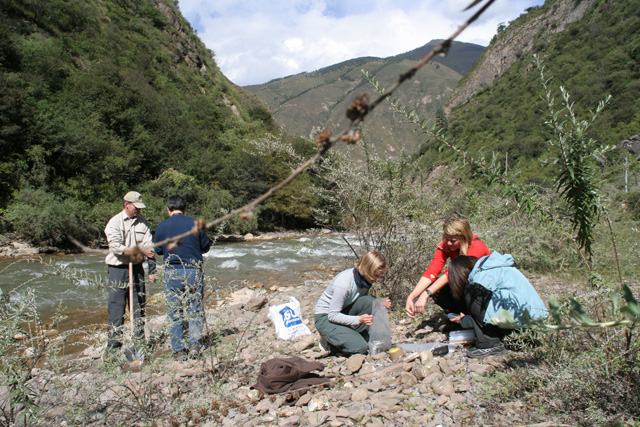
Sampling fluvial sediments in a deep cut valley north of Litang
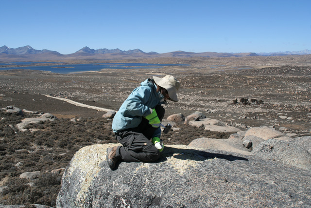
Fu Ping sampling a bedrock knob on the Haizi Shan plateau
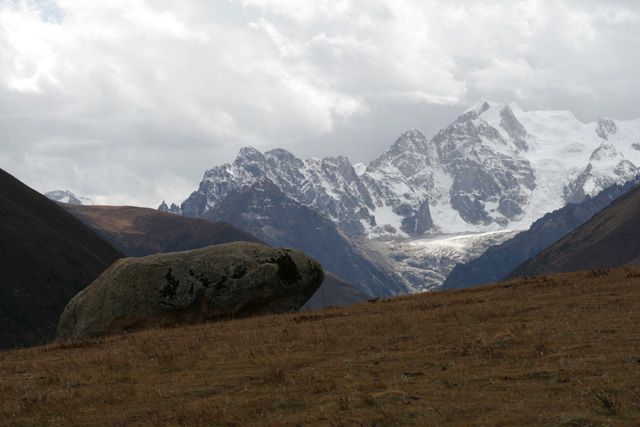
A big boulder and a present-day glacier above the Xinluhai lake
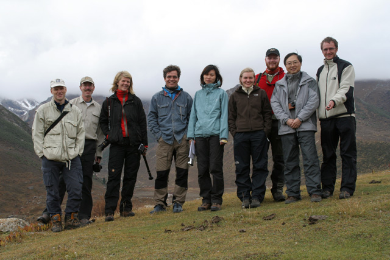
Clas Hättestrand, Jon Harbor, Emma Johansson, Arjen Stroeven, Fu Ping, Barbara Hauzenberger, Björn Morén, Zhou Liping, Jakob Heyman - the Shaluli Shan fieldwork 2009 group (apart from the drivers)
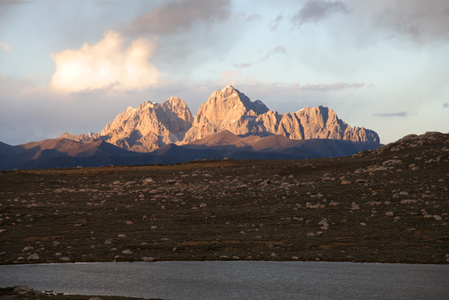
Nice mountains in the evening seen from the Chuanxi plateau
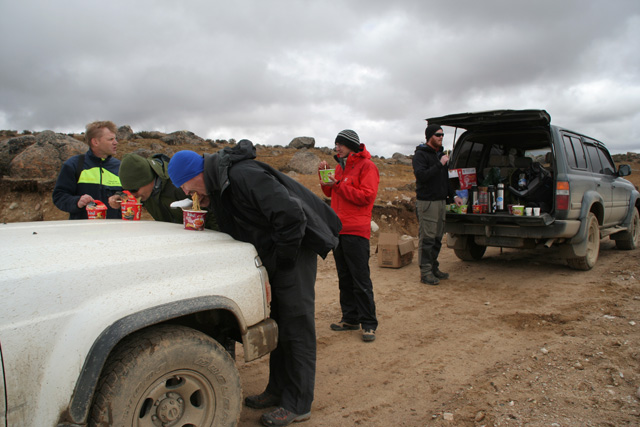
Snack noodles was our typical field lunch - here on a maybe (?) LGM moraine on the Haizi Shan plateau
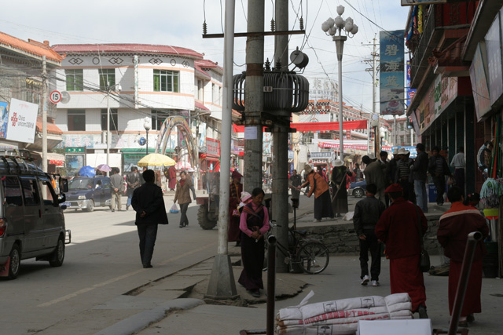
Ganzi - where we stayed for quite some time
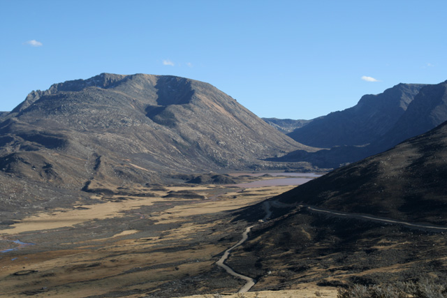
A nice glacial valley with moraines north of the Haizi Shan plateau
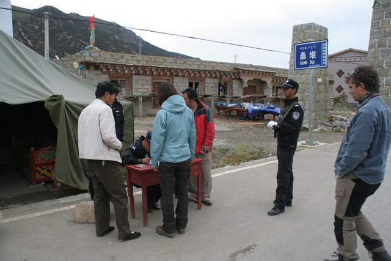
One of numerous police controls - here in Sangdui village in the Daocheng valley
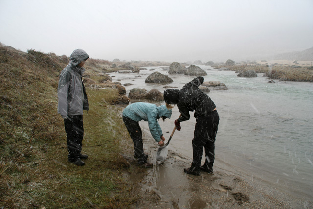
Sampling fluvial sediments in sleet - apart from this day we had almost only sun, sun, sun (particularly during the second half of the fieldwork)
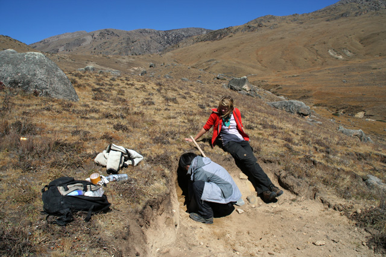
Sampling for OSL from the Kuzhaori moraine
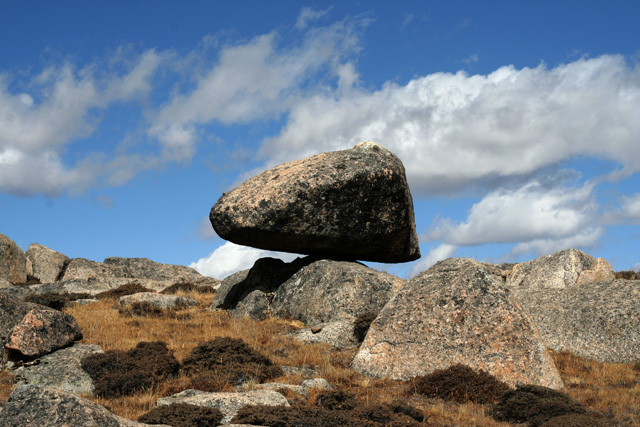
Perched boulder in the central part of the Haizi Shan plateau
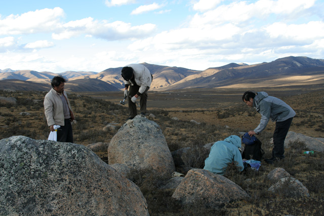
Sampling a boulder on the Haizi Shan plateau 1
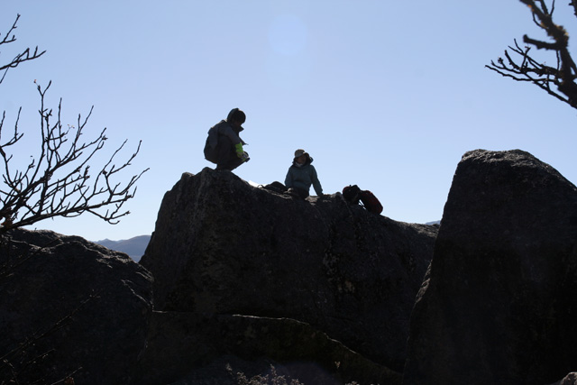
Sampling a boulder on the Haizi Shan plateau 2
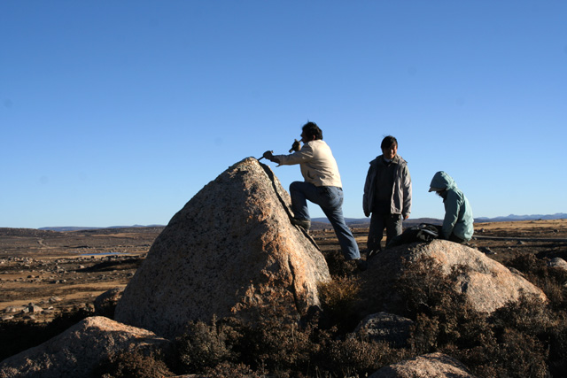
Sampling a boulder on the Haizi Shan plateau 3
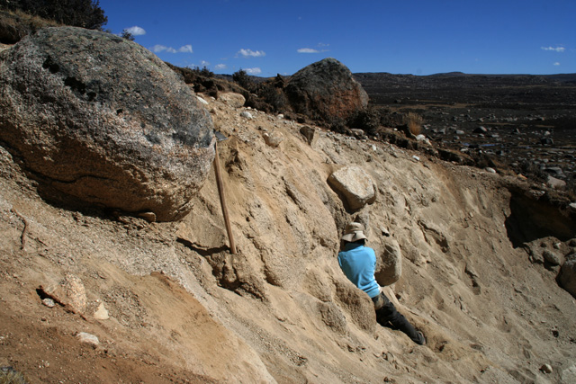
Sampling a saprolite profile on the Haizi Shan plateau
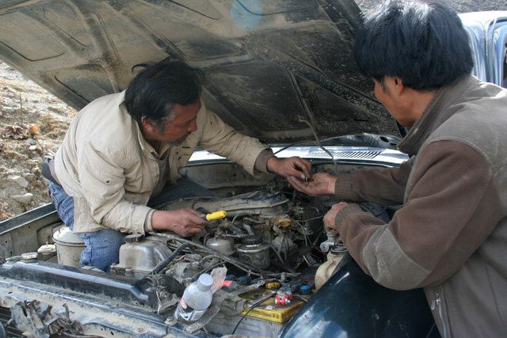
Zhou shifu and Zhao shifu repairing the car on our way down towards Chengdu
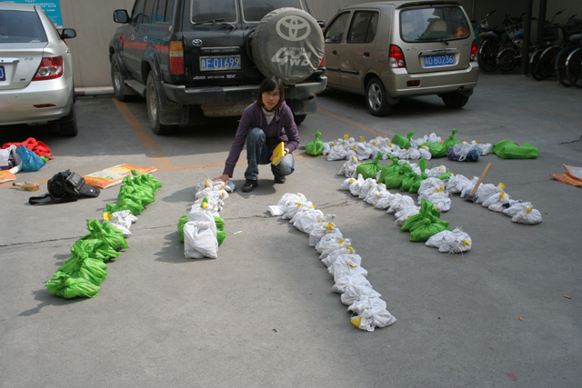
Organising the samples in Chengdu